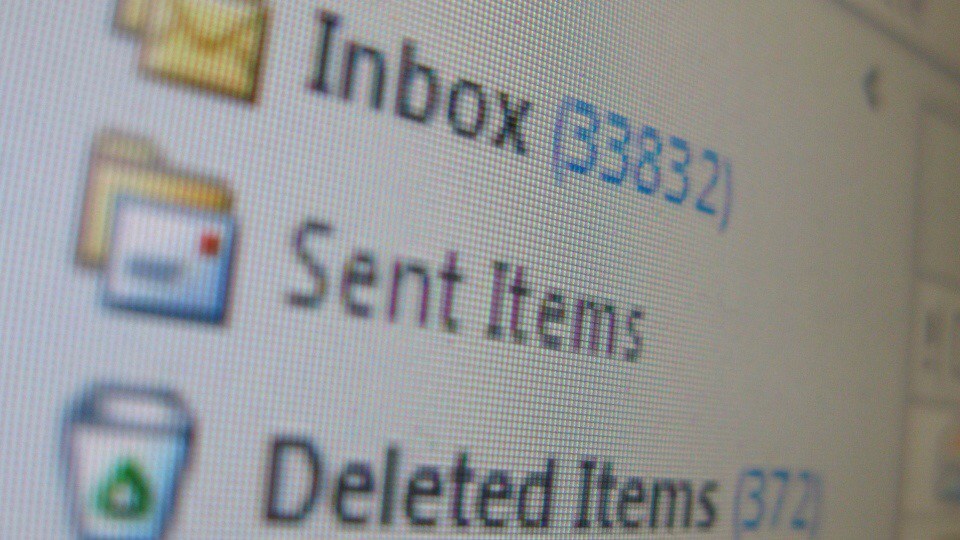

Améliorez votre productivité grâce au principe de l’Inbox Zero
Tout le monde s’est un jour retrouvé submergé par des dizaines (centaines ?) d’e-mails qui s’entassent dans sa boîte mail. Cela peut rapidement devenir problématique dans le cas où certains de ces e-mails proviennent de clients ou de prospects qui attendent un retour rapide de votre part. En effet, plus on a de mails qui traînent, plus on a de chances d’oublier de traiter les plus importants ! Quitte à passer à côté d’une opportunité commerciale importante.

C’est pourquoi cela fait de nombreuses années que j’ai adopté la méthode de l’Inbox Zero. C’est un principe de productivité très simple en apparence, mais qui demande une discipline de fer pour ne pas retomber dans ses anciens travers. Et qui va demander beaucoup de boulot en amont à tous ceux qui ont des centaines, voire des milliers d’e-mail qui s’entassent dans leur boîte de réception depuis des années.
L’objectif ? Une boîte de réception vide de tout e-mail ! Ca c’est pour la théorie, l’idéal vers lequel il faut tendre. Dans la réalité, il m’arrive d’avoir quelques mails qui trainent pendant 2–3 semaines, le temps de les traiter entièrement. Mais j’ai rarement plus de 5–6 mails dans ma boîte de réception, et en soi c’est déjà une belle victoire !
Voici quelques astuces pour arriver à réduire au maximum la taille de votre boîte mail :
Désinscrivez-vous de toutes ces newsletters inutiles qui vous spamment tous les jours : un lien de désinscription doit être présent sur chacune d’entre elle. Si ce n’est pas le cas, envoyez directement un mail au site pour faire votre demande. Et s’il persiste à vous envoyer des mails non sollicités, notez le en “Spam” et on n’en parle plus !
Supprimez tous les mails qui ne vous serviront plus à rien : un rappel pour un événement passé, une question ayant reçu sa réponse, …
Pour tous les mails comprenant des identifiants, enregistrez ces infos dans un gestionnaire de mots de passe et supprimez ces mails. Vous gagnerez en sécurité tout en nettoyant votre boîte de réception !
Si un mail peut être traité en moins de 2 minutes, n’attendez pas 3 jours pour vous en occuper, gérez le directement !
N’hésitez pas à créer des dossiers pour les e-mails vraiment importants que vous ne pouvez pas supprimer. Mais n’en profitez pas pour utiliser ces dossiers comme fourre-tout et déplacer le problème de votre boîte de réception obèse !
Faites une passe régulière sur vos mails, et supprimez, supprimez, supprimez (n’oubliez pas votre dossier spam)… On n’archive pas, on supprime. Vous comprendrez pourquoi dans mon dernier paragraphe !

Pour moi, un e-mail n’est rien d’autre qu’une tâche à effectuer, simplement avec une mise en forme différente que dans votre gestionnaire de tâches. Si vous en avez beaucoup et que vous ne vous en sortez pas, c’est que vous avez peut-être un petit soucis d’organisation ;-)
Il y a un dernier point important sur l’Inbox Zero : l’écologie. Et oui, en plus de vous faire gagner en productivité, vous faites un geste pour la planète sans même vous en rendre compte. Moins de mail = moins de CO2 émis = un avenir plus radieux pour tous !
CO2 : une entreprise de 100 personnes génère chaque année rien qu’avec son courrier électronique 13,6 tonnes d’équivalent CO2, soit l’équivalent de 14 allers-retours Paris et New York. (ADEME)
N’hésitez pas à parcourir les articles suivants pour vous comprendre un peu mieux la problématique de l’email dans le réchauffement climatique :
- Nettoyer votre boîte mail peut sauver la planète
- Combien de CO2 pèsent un mail, une requête Web et une clé USB ?
- Un e-mail, ça coûte très cher à la planète
Comme vous pouvez le constater, cette méthode ne comporte donc que des avantages : une tranquilité d’esprit, une productivité boostée, des clients heureux, et une planète qui respire un peu mieux !
Et toi, tu t’y mets quand à l’Inbox Zero ?